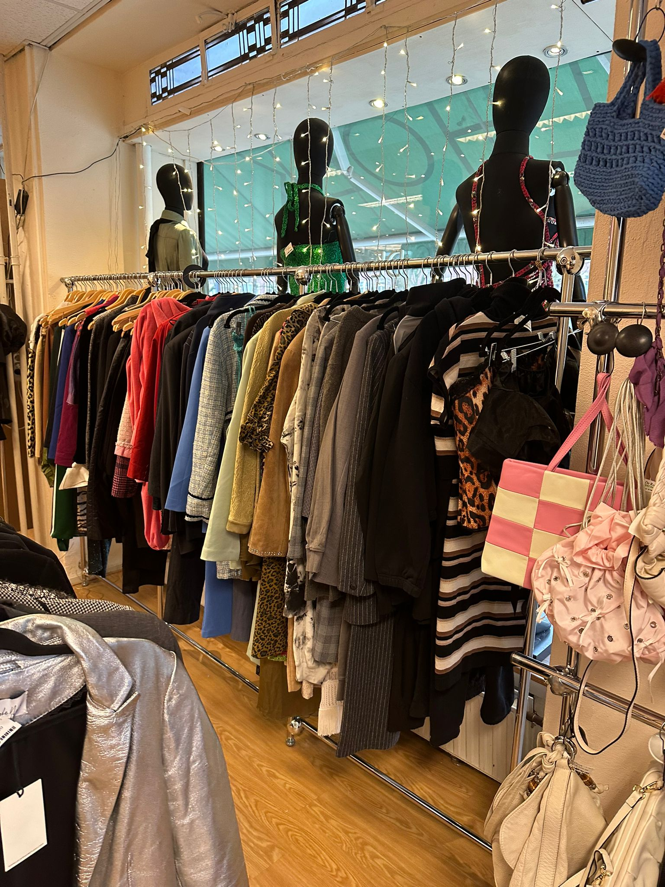

Tweedehands kleding
Tweedehands kleding word steeds populairder, en met goede reden. Er zitten alleen maar voordelen aan, zoals; Het is goedkoper, de kledingcyclus gaat langer mee, het is beter voor het milieu en je hebt kans dat je hele leuke off-brand dingen kan tegenkomen. Maar veel mensen weigeren toch tweedehands kleding te kopen omdat ze denken dat het slechte kwaliteit is, of vies is, of lelijk, of afgedragen, noem het maar op. De ruilhoek, een tweedehands-kledingwinkel in zuid-amsterdam, laat zien dat dit niet het geval hoeft te zijn.

De Ruilhoek is een tweedehands-kledingwinkel gevestigd in zuid-amsterdam. De ruilhoek zit heel dicht bij mij, wat er voor zorgt dat ik er vaak eventjes snel doorheen loop om te kijken of ik een goeie deal of iets dergelijks zie, en vaker dan niet is dat ook het geval. Lees meer hiervoer op de pagina Mijn ervaring. De ruilhoek bied een groot assortiment tweedehandskleding, en ze kijken uitgebreid of elk stuk kleding dat ze binnenkrijgen goeie kwaliteit is en voldoet aan hun standaarden, daarna schatten ze de verkoopwaarde van het product in en als het eenmaal verkocht is krijg je de helft van het bedrag van ze. Meer informatie over de ruilhoek en hun kan je hier vinden